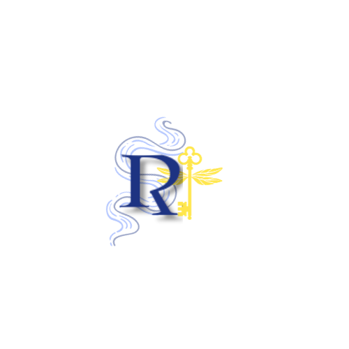
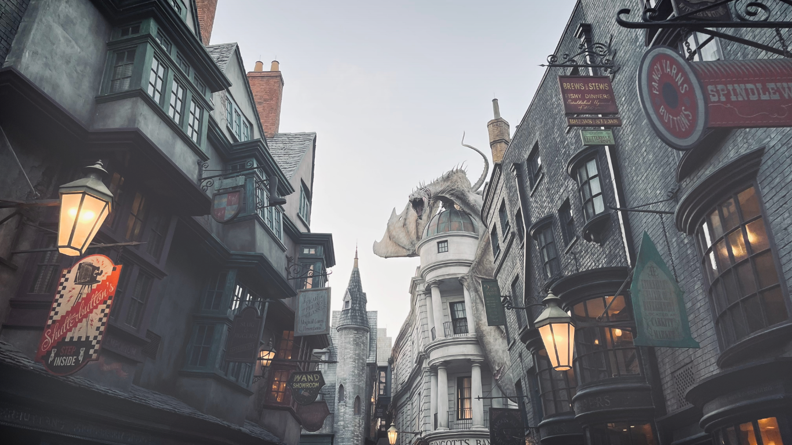
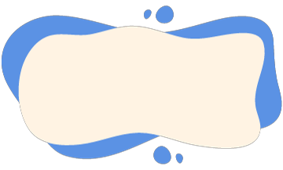
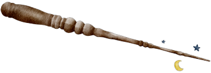
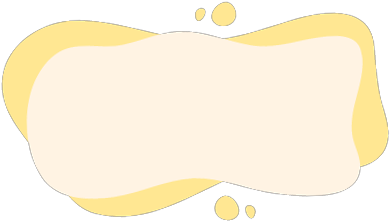

DRACO DORMIENS NUNQUAM TITILLANDUS



Ollivanders™: fabricantes de varinhas existe desde 382 AC. O dono, Garrick Olivaras, foi escolhido para a casa corvinal aos 11 anos e revolucionou a fabricação de varinhas. Fez com que a varinha escolhesse um bruxo apropriado, com o qual sentisse uma maior afinidade


o Banco dos Bruxos Gringotes, é o único banco do beco diagonal, foi criado por um duende chamado Gringote em 1474.
O lema do banco de Gringotes é "Fortius Quo Fidelius", que em latim significa "Força pela Lealdade".